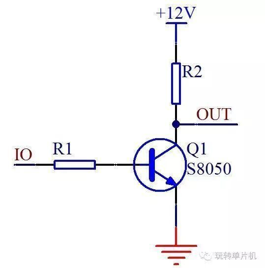
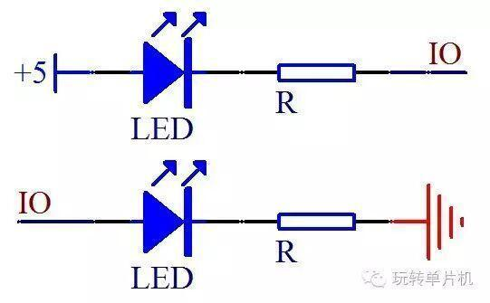
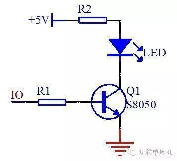
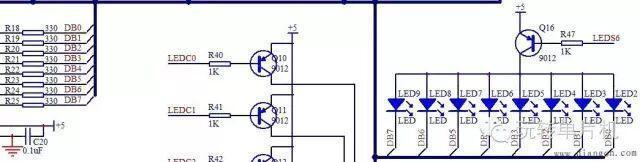
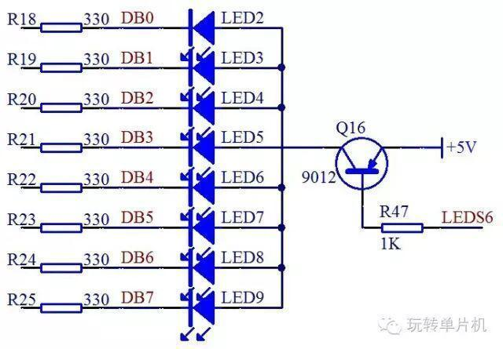
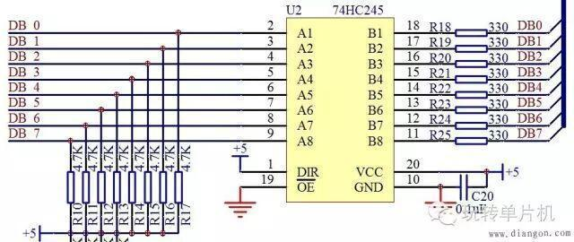
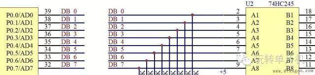

【技术】三极管的应用
我们可以通过单片机控制三极管的基极来间接控制后边的小灯的亮灭，用法大家基本熟悉了。还有一个控制就是进行不同电压之间的转换控制，比如我们的单片机的IO口是5V系统，如果直接接12V系统会烧坏单片机，所以我们加一个三极管，三极管的工作电压高于单片机的IO口电压，用5V的IO口来控制12V的电路，如图1所示。



图1 三极管电路图
图1里所示，当IO口输出高电平5V时，三极管导通，OUT输出低电平0V，当IO口输出低电平时，三极管截止，OUT则由于上拉电阻R2的作用而输出12V的高电平，这样就实现了低电压控制高电压的工作原理。
所谓的驱动，主要是指电流输出能力。我们再来看这两个图之间的对比



图2 LED小灯对比示意图
图2中上边的LED灯，和我们第二课讲过的LED灯是一样的，当IO口是高电平时，小灯熄灭，当IO口是低电平时，小灯点亮。
下边那个图呢，按照这种推理，IO口是高电平的时候，应该有电流流过并且点亮小灯，但是实际并非如此。
单片机主要是个控制器件，具备四两拨千斤的特点。就如同杠杆必须有一个支点一样，想要撑起整个地球必须有力量承受的支点。单片机的IO口可以输出一个高电平，但是他的输出电流很有限，普通IO口输出高电平的时候，大概只有几十到几百uA的电流，达不到1mA，也就点不亮这个LED小灯或者亮度很低，这个时候如果我们想高电平点亮LED，用上三极管就可以这样来处理，我们板上的这种型号，可以通过500mA的电流，有的三极管通过的电流还更大一些，如图3所示。



图3 三极管驱动LED小灯
图3中，当IO口是高电平，三极管导通，因为三极管的电流放大作用，c极电流就可以达到mA以上了，就可以成功点亮LED小灯。
虽然我们用了IO口的低电平可以直接点亮LED，但是单片机的IO口作为低电平，输入电流就可以很大吗？这个我想大家都能猜出来，当然不可以。单片机的IO口电流承受能力，不同型号不完全一样，就STC89C52来说，官方手册的81页有对电气特性的介绍，整个单片机的工作电流，不要超过50mA，单个IO口总电流不要超过6mA。即使一些增强型51的IO口承受电流大一点，可以到25mA，但是还要受到总电流50mA的限制。那我们来看电路图的8个LED小灯的这个部分电路，如图4所示。



图4 LED电路图(一)
4图示这里我们要学会看电路图的一个知识点，大家注意看，电路图右侧所有的LED下侧的线最终都连到一根黑色的粗线上去了，大家注意，这个地方不是实际的完全连到一起，而是一种总线的画法，画了这种线以后，表示这是个总线结构，所有的名字一样的是一一对应的连接到一起，其他名字不一样的，是不连到一起的。比如左侧的DB0和右侧的最左边的LED2小灯下边的DB0是连在一起的，而和DB1等其他线不是连在一起的。
那么我们把4电路图里的我们现在需要讲的这部分再摘出来看。



图5 LED电路图(二)
大家通过5的电路图来计算一下，5V的电压减去LED本身的压降，减掉三极管e和c之间的压降，限流电阻用的是330欧，那么每条支路的电流大概是8mA，那么8路LED如果全部同时点亮的话电流总和就是64mA。这样如果直接接到单片机的IO口，那单片机肯定是承受受不住的，即使短时间可以承受，长时间工作就会不稳定，甚至导致单片机烧毁。
有的同学会提出来可以加大限流电阻的方式来降低这个电流。比如改到1K，那么电流不到3mA，8路总的电流就是20mA左右。首先，降低电流会导致LED小灯亮度变弱，小灯的亮度可能关系不大，因为我们同样的电路接了数码管，后边我们要讲数码管还要动态显示，如果数码管亮度不够的话，那视觉效果就会很差，所以降低电流的方法并不可取；其次，对于单片机来说，他主要是起到控制作用，电流输入和输出的能力相对较弱，P0的8个口总电流也有一定限制，所以如果接一两个LED小灯观察，可以勉强直接用单片机的IO口来接，但是接多个小灯，从实际工程的角度去考虑，就不推荐直接接IO口了。那么我们如果要用单片机控制多个LED小灯该怎么办呢？
除了三极管之外，其实还有一些驱动IC，这些驱动IC可以作为单片机的缓冲器，仅仅是电流驱动缓冲，不起到任何逻辑控制的效果，比如我们板子上用的74HC245D这个芯片，这个芯片在逻辑上起不到什么别的作用，就是当做电流缓冲器的，我们通过查看其数据手册，74HC245稳定工作在70mA电流是没有问题的，比单片机的8个IO口大多了，所以我们可以把他接在小灯和IO口之间做缓冲，如图6所示


图6 74HC245功能图
从图6我们来分析，其中VCC和GND就不用多说了，细心的同学会发现这里有个0.1uF的去耦电容噢。
74HC245是个双向缓冲器，1引脚DIR是方向引脚，当这个引脚接高电平的时候，右侧所有的B编号的电压都等于左侧A编号对应的电压。比如A0是高电平，那么B0就是高电平，A1是低电平，B1就是低电平等等。如果DIR引脚接低电平，得到的效果是左侧A编号的电压都会等于右侧B编号对应的电压。因为我们这个地方控制端是左侧接的是P0口，所以我们要求B等于A的状态，所以1脚我们直接接的高电平。图6中还有一排电阻R10到R17是上拉电阻，这个电阻的用法我们在后边介绍。
还有最后一个使能引脚19脚OE，这个引脚上边有一横，表明是低电平有效，当接了低电平后，74HC245就会按照刚才上边说的起到双向缓冲器的作用，如果OE接了高电平，那么无论DIR怎么接，A和B的引脚是没有关系的，也就是74HC245功能不能实现出来。
从我们的电路图7可以看出来，我们的P0口和74HC245的A端是直接接起来的。这个地方，有个别同学有一个疑问，就是我们明明在电源VCC那地方加了一个三极管驱动了，为何还要再加245驱动芯片呢。这里大家要理解一个道理，电路上从正极经过器件到地，首先必须有电流才能正常工作，电路中任何一个位置断开，都不会有电流，器件也就不会参与工作了。其次，和水流一个道理，从电源正极到负极的电流水管的粗细都要满足要求，任何一个位置的管子过细，都会出现瓶颈效应，电流在整个通路中细管处会受到限制而降低，所以在电路通路的每个位置上，都要保证足够通道足够畅通，这个245的作用就是消除单片机IO这一环节的瓶颈。


图7 单片机和74HC245接口

信息部/张凤乔